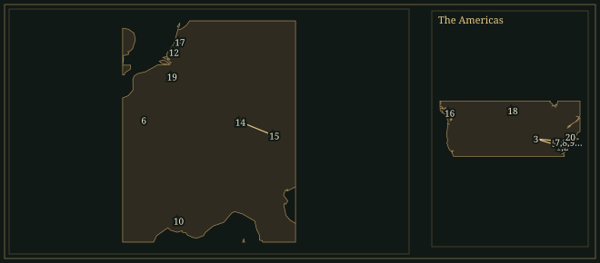

PhilipGlass
American composer and keyboard player, born in Baltimore, who wrote operas, symphonies, string quartets and film scores and led his own ensemble in New York.
- Trained
- Peabody Conservatory, Baltimore; University of Chicago; Juilliard with William Bergsma and Vincent Persichetti; Nadia Boulanger in Paris from 1964
- At work
- Composer and keyboard player; formed the Philip Glass Ensemble in New York in 1968
- Collaborators
- Ravi Shankar · Robert Wilson · Godfrey Reggio · Errol Morris · Kronos Quartet
- Output
- More than thirty operas, fifteen symphonies, nine string quartets, piano études, film and theatre scores
“What came to me as a revelation was the use of rhythm in developing an overall structure in music.”
Life
Philip Glass was born in Baltimore on 31 January 1937. His father, Ben Glass, repaired radios and then sold records, and Philip worked in the shop from the age of twelve; at fifteen he was buying the classical stock. Ben took home unsold records, among them Shostakovich quartets, to find out what was wrong with them. Philip began on the violin at six and studied flute at the Peabody Conservatory from the age of eight. He entered the University of Chicago in 1952, went on to the Juilliard School in New York to study composition with William Bergsma and Vincent Persichetti, and took his master’s degree in 1961.
1964–67Paris and India
A Fulbright scholarship took Glass to Paris in 1964 to study harmony and counterpoint with Nadia Boulanger. He said in 1999 that she “wasn’t a very nice person. She was a wonderful teacher.” He had a private lesson each week, a group class on Wednesdays and a third class that the students called Black Thursday. Each week he sang one voice of a Bach chorale while playing the other three.
In his second year in Paris Glass was hired to write out a film score by the sitar player Ravi Shankar, for Conrad Rooks’s Chappaqua, for about sixteen French studio musicians. Shankar had written nothing down and spent the days before the session asking Glass about Stockhausen and John Cage. The music had no bar lines. Glass found that its rhythmic cycles were built by joining units together, and said it “was a question of adding instead of dividing.” From the last months of 1966 to the first months of 1967 he was in India with his wife, JoAnne Akalaitis, a founder of the Mabou Mines theatre company.
1967–75The ensemble in New York
Glass returned to New York in 1967 and worked again with Shankar and with the tabla player Alla Rakha. He grew close to Terry Riley, Steve Reich and Jon Gibson. His first concert, at the Film-Makers Cinematheque in 1968, included Strung Out for solo violin and Music in the Form of a Square for two flutes; in the same year he put together the first Philip Glass Ensemble of amplified keyboards, voices, saxophones and flutes. His pieces of 1967–69 have titles that describe them: Two Pages, Music in Contrary Motion, Music in Fifths and Music in Similar Motion.
The ensemble played in lofts and galleries in SoHo. “We’d be lucky if we attracted an audience of twenty-five,” Glass recalled. Brian Eno heard the group at the Royal College of Art in 1969 or 1970 and remembered “sound made completely physical and as dense as concrete by sheer volume and repetition”. Glass drove a taxi, worked as a plumber and moved furniture, and told Terry Gross in 2015 that he was in his forties when he held his last day job. Music in Twelve Parts, written in 1971–74 and about four hours long, was first performed at Town Hall in 1974.
1976Einstein on the Beach
Glass first saw Robert Wilson’s work in 1973, at an overnight performance of The Life and Times of Josef Stalin at the Brooklyn Academy of Music. In 1974 the two planned a stage work over lunches at a restaurant on Sullivan Street. Wilson proposed Chaplin and then Hitler, Glass proposed Gandhi, and they settled on Einstein. Glass wrote the music in 1975 from Wilson’s drawings. There are four acts, nine scenes and five knee plays, and a solo violinist is dressed as Einstein. The text consists of numbers and solfège syllables, poems by Christopher Knowles, with whom Wilson had worked in New York schools, and short texts by Lucinda Childs and Samuel M. Johnson.
Einstein was first performed at the Avignon Festival on 25 July 1976 and was presented throughout Europe that summer. Jane Hermann of the Metropolitan Opera, who had a large hand in bringing it to the Met, told The New Yorker that when Wilson asked how she knew it would sell out she said: “Your time has come. The avant-garde has become official.” It was given twice at the Met, the first time on 21 November, to sold-out houses and without an interval. The first recording, issued on Tomato and then CBS Masterworks, was abridged to four LPs, and the opening scene went from about forty minutes to a little over twenty.
1980–84Satyagraha, Akhnaten and Koyaanisqatsi
Satyagraha, commissioned by the City of Rotterdam, was first performed there by the Netherlands Opera on 5 September 1980 under Christopher Keene. Its text is adapted from the Bhagavad Gita and sung in Sanskrit, and its subject is Gandhi’s years in South Africa. Akhnaten was commissioned by the Stuttgart Opera. Glass began the libretto in January 1982 with Shalom Goldman, Robert Israel and Richard Riddell, started the music that summer and finished both in July 1983. Achim Freyer directed the first performance in Stuttgart on 24 March 1984, with Dennis Russell Davies conducting.
Glassworks, written in 1981 and issued by CBS Masterworks in 1982, was meant to introduce his music “to a more general audience”, and his website says he was the first composer since Copland to join the label. One of its six pieces, Façades, was first intended for Godfrey Reggio’s film Koyaanisqatsi, for images of Wall Street on a Sunday morning. The film, released in 1983, has a score for Glass’s ensemble, a chorus and a bass voice that chants the Hopi title word. Alex Ross wrote in 2005 that Glass composed music to the footage and Reggio and his editors then reworked the footage to the music. In an interview on the DVD, Glass defined film scoring as “observing accurately the distance between the image and the music”.
1983–2026Later work
Glass returned to the string quartet in 1983, after a first numbered quartet in 1966. Company, the Second Quartet, was written for Mabou Mines’s staging of Beckett’s prose poem, and the Third (1985) is drawn from Glass’s Mishima score for Paul Schrader. The Fourth, “Buczak” (1989), commemorates the artist Brian Buczak, and the Fifth (1991) was written for the Kronos Quartet, who issued a recording of Nos. 2–5 in 1995 and gave the first performances of Nos. 6 and 7.
Errol Morris used tracks from Mishima, In the Upper Room and Glassworks as temporary music while editing The Thin Blue Line (1988), and he wrote in a note on Glass’s website: “I needed someone to write Philip Glass music… No, I needed Philip Glass.” Glass’s scores for Kundun (1997), The Hours (2002) and Notes on a Scandal (2006) each received an Academy Award nomination. In November 2019 the Metropolitan Opera staged Akhnaten in Phelim McDermott’s production, with Anthony Roth Costanzo in the title role and Karen Kamensek conducting. Symphony No. 15, “Lincoln”, for baritone and orchestra, was composed in 2021–23 and first performed by the Boston Symphony Orchestra at Tanglewood on 5 July 2026.
Where to hear it
- Einstein on the Beach1975–76Philip Glass Ensemble, Michael Riesman, conductor; Paul Zukofsky, violin · Tomato; CBS Masterworks (now Sony Classical) · Big Apple Recording Studios, New York, 1978
The first recording of the opera, abridged by Glass to four LPs; the CBS Masterworks set is dated 1979. Zukofsky is the violinist in the part dressed as Einstein. Glass’s sleeve note says that the most important musical material appears in the knee plays and features the violin. By his account the 1993 Nonesuch recording runs about 190 minutes against some 160 in 1978.
- Glassworks1981Philip Glass Ensemble; Michael Riesman, conductor; Philip Glass, electric organ · CBS Masterworks (now Sony Classical) · Green Street Recording, New York
Glass’s first album for the label, issued in 1982, with six pieces written for the recording studio. In the published score Opening is for solo piano and Façades for two soprano saxophones, viola and cello, with an optional synthesizer. Glass’s note says the music was meant to introduce his work to a more general audience, and Gramophone called it “an excellent introduction”.
- Akhnaten1982–83Stuttgart State Opera Orchestra and Chorus, Dennis Russell Davies; Paul Esswood (Akhnaten), Milagro Vargas (Nefertiti) · Sony Classical · 1987, Karlshöhe Church and Tonstudio Bauer, Ludwigsburg
Recorded with the company and conductor of the 1984 first performance. Glass made a complete synthesizer recording of the opera in real time and sent the tapes to the Stuttgart production team eight months before the opening. Amarna-period texts are sung in their original languages, and the orchestra has no violins. A recording of the Metropolitan Opera performance of 23 November 2019 was released on Orange Mountain Music in 2021.
- String Quartets Nos. 5, 4, 2 and 31983–91Kronos Quartet (David Harrington, John Sherba, Hank Dutt, Joan Jeanrenaud) · Nonesuch · Skywalker Sound, Marin County, California
The album plays the quartets in the order 5, 4, 2, 3. No. 5 was written for the Kronos Quartet, No. 2 (“Company”) for a staging of Beckett’s prose poem, and No. 3 takes its six movements from the music Glass wrote for Paul Schrader’s film Mishima. The album was released in 1995.
These recordings are under copyright, so the Hall cannot play them; the links go to the labels’ and artists’ own uploads and to streaming services.
Places

All 20 places, with sources
- Baltimore, Maryland · 31 January 1937 · born
Born in Baltimore; his father repaired radios and sold records in the city, and Philip worked in the shop from the age of twelve.
National Endowment for the Arts: Philip Glass (2010 Opera Honoree biography) · Fresh Air, 21 September 1999: Ira Glass interviews Philip Glass (transcript)
- Peabody Institute, Baltimore · 1945–1951 · studied
Studied flute at the Peabody Conservatory through an accelerated programme from the age of eight.
National Endowment for the Arts: Philip Glass (2010 Opera Honoree biography) · San Francisco Classical Voice: Philip Glass, biographical outline (Peabody Institute, 1945–1951)
- University of Chicago · 1952–1956 · studied
Entered the university at the age of fifteen; took a liberal-arts degree in 1956.
National Endowment for the Arts: Philip Glass (2010 Opera Honoree biography) · Tim Page, notes to Two Pages / Contrary Motion / Music in Fifths / Music in Similar Motion (Nonesuch, 1994): matriculated in the fall of 1952; bachelor’s degree 1956
- Juilliard School, New York · 1956–1961 · studied
Studied composition with William Bergsma and Vincent Persichetti, taking the BA in 1959 and the MA in 1961; he left for a time to earn money as a crane operator in Baltimore.
National Endowment for the Arts: Philip Glass (2010 Opera Honoree biography)
- Pittsburgh · 1962–1964 · worked (inferred)
Two years on a Ford Foundation grant writing music for ensembles drawn from the city’s schools, between the master’s degree of 1961 and the move to Paris in 1964.
National Endowment for the Arts: Philip Glass (2010 Opera Honoree biography)
- Paris · 1964–1966 · studied
Studied harmony and counterpoint with Nadia Boulanger on a Fulbright scholarship; in his second year he notated a film score for Ravi Shankar for French studio musicians.
National Endowment for the Arts: Philip Glass (2010 Opera Honoree biography) · Tim Page, notes to Two Pages / Contrary Motion / Music in Fifths / Music in Similar Motion (Nonesuch, 1994) · San Francisco Classical Voice: Philip Glass, biographical outline (Paris, 1964–1966)
- New York City · 1967 · lived
Returned to New York in 1967 and supported himself with day jobs, among them taxi driving and plumbing, while he formed the Philip Glass Ensemble.
National Endowment for the Arts: Philip Glass (2010 Opera Honoree biography) · Fresh Air, 6 April 2015: Philip Glass on Words Without Music (transcript)
- Brooklyn Academy of Music · 1973 · heard
Saw Robert Wilson’s twelve-hour The Life and Times of Josef Stalin in an overnight performance. Einstein on the Beach.
- The Town Hall, New York · 1974 · premiere
First performance of Music in Twelve Parts by the Philip Glass Ensemble. Music in Twelve Parts.
- Avignon · 25 July 1976 · premiere
First performance of Einstein on the Beach, by the Philip Glass Ensemble at the Festival d’Avignon. Einstein on the Beach.
Philip Glass: Einstein on the Beach (composition page): premiere, 25 July 1976
- Metropolitan Opera House, New York · 21 November 1976 · premiere
American première of Einstein on the Beach, the first of two sold-out performances. Einstein on the Beach.
- Rotterdam · 5 September 1980 · premiere
First performance of Satyagraha by the Netherlands Opera, conducted by Christopher Keene; the opera was commissioned by the City of Rotterdam. Satyagraha.
- The Public Theater, New York · 1983 · premiere
First performance of String Quartet No. 2, “Company”, written for Mabou Mines’s dramatization of Beckett’s prose poem. String Quartet No. 2 (“Company”).
Philip Glass: String Quartet No. 2 “Company” (composition page)
- Stuttgart · 24 March 1984 · premiere
First performance of Akhnaten at the Württembergisches Staatstheater, conducted by Dennis Russell Davies, in a production by Achim Freyer. Akhnaten.
Philip Glass: Akhnaten (composition page) · Philip Glass: Akhnaten (1987 recording page, with the composer’s note)
- Munich · 30 August 1992 · premiere
First performance of Symphony No. 1, “Low”, by the Junge Deutsche Kammerphilharmonie under Dennis Russell Davies. Symphony No. 1 (“Low”).
- Chan Centre for the Performing Arts, Vancouver · 19 October 2013 · premiere
First performance of String Quartet No. 6 by the Kronos Quartet. String Quartet No. 6.
- Amsterdam · 7 July 2014 · premiere
First performance of String Quartet No. 7 by the Kronos Quartet at the Colours International Dance Festival, in Nederlands Dans Theater’s Spiritwalking. String Quartet No. 7.
- Alloway Hall, Winnipeg · 1 February 2018 · premiere
First performance of String Quartet No. 8 by the JACK Quartet, commissioned by the Winnipeg Symphony Orchestra New Music Festival and Carnegie Hall. String Quartet No. 8.
- Bozar, Brussels · 15 January 2022 · premiere
First performance of String Quartet No. 9, “King Lear”, by the TANA Quartet at the Palais des Beaux-Arts. String Quartet No. 9 (“King Lear”).
Philip Glass: String Quartet No. 9 “King Lear” (composition page)
- Tanglewood, Lenox, Massachusetts · 5 July 2026 · premiere
First performance of Symphony No. 15, “Lincoln”, by the Boston Symphony Orchestra with the baritone Zachary James, conducted by Karen Kamensek. Symphony No. 15 (“Lincoln”).
Philip Glass: Symphony No. 15 (composition page) · Philip Glass: news, 6 July 2026 (premiere at Tanglewood with Zachary James and Karen Kamensek)
Influences
Teachers, encounters and borrowed music, each with its account and sources in the Web of Influence.
Influences received
Influences passed on
The sound
Additive process
A short rhythmic figure is repeated, and a note is added or removed at each stage. Glass wrote that a simple figure can expand and then contract “maintaining the same general melodic configuration”, while the addition or loss of one note gives it a different rhythmic shape. Two Pages (1967–68) applies the method to a single line.
Rhythmic cycles
Glass defined a rhythmic cycle as the simultaneous repetition of two or more different rhythmic patterns, which return together to their starting points after a time set by their lengths. Some writers described the result as wheels inside wheels, which Glass called “a rather fanciful but not wholly inaccurate way of evoking the resulting effect”.
Harmony and the arpeggio
Tim Page wrote that Einstein on the Beach added “a new functional harmony” to the early conceptual works, and he singled out a modulation between F minor and E major in the Train scene that returns later in the opera. Glass told Terry Gross that the arpeggio holds melody, harmony and rhythm together, and named Bach’s unaccompanied violin pieces as an example.
The amplified ensemble
The Philip Glass Ensemble combines keyboards, saxophones, flutes and a solo voice, amplified and fed through a mixer; Kurt Munkacsi was its sound designer. Glass said the players learned a light touch for electric keyboards and kept together by listening through the speakers to the left hand of Michael Riesman, the music director.
Texts
Einstein on the Beach sets numbers, which Glass said were the beats of the music, and solfège syllables. Satyagraha is sung in Sanskrit, and Akhnaten uses texts from the Amarna period in their original languages with a narrator in the audience’s language. Koyaanisqatsi takes its title from a Hopi word, and Songs from Liquid Days sets English lyrics by four songwriters.
Scoring for film
The score for The Hours uses piano, strings, harp, celeste and percussion. The score for Kundun adds Tibetan horns and cymbals and a chorus of Tibetan monks to the orchestra. Koyaanisqatsi uses Glass’s ensemble, a chorus and a solo bass voice.
Works
A selection from the composer’s works.
- 1967–68Two PagesKeyboard instrumentsGlass dated it to 1967 or 1968. A single line expands and then contracts by additive process; Tim Page called it the earliest and most spartan of four early works recorded together on one Nonesuch album.
- 1968Strung OutSolo amplified violinPlayed at his first concert, at the Film-Makers Cinematheque. The pages of the score were strung out around the room, and the violinist moved from page to page while the amplified sound stayed in one place.
- 1969Music in FifthsEnsembleWritten entirely in parallel fifths, which traditional counterpoint forbids; Glass considered it a teasing homage to Boulanger. Its closed form ends when the accumulated repetitions fill a fixed structure.
- 1969Music in Similar MotionEnsembleOne line is joined by a second a fourth above, then a third a fourth below, and finally a bass line. Glass said in 1993 that its innovation was its sense of drama.
- 1969Music in Contrary MotionSolo organAn open form that could continue indefinitely; pedal points give it a functional harmony in A minor. Glass played it on electric organ.
- 1971–74Music in Twelve PartsPhilip Glass EnsembleAbout four hours long; a survey of the repetition techniques Glass had developed since the mid-1960s. First performed at Town Hall, New York, in 1974.
- 1975–76Einstein on the BeachOpera in four acts, with Robert Wilson; amplified ensemble, chorus, soloists, actorsFive knee plays connect the scenes, and the text is numbers and solfège syllables. First performed at the Avignon Festival on 25 July 1976 and at the Metropolitan Opera House, New York, on 21 November 1976.
- 1979–80SatyagrahaOpera in three acts; orchestra, chorus, soloistsSanskrit text adapted from the Bhagavad Gita by Glass and Constance DeJong; Gandhi in South Africa. First performed in Rotterdam on 5 September 1980.
- 1981GlassworksSmall ensemble, six piecesWritten for a CBS Masterworks recording issued in 1982: Opening, Floe, Islands, Rubric, Façades and Closing.
- 1982KoyaanisqatsiFilm score; ensemble, chorus, bass voiceMusic for Godfrey Reggio’s film, whose Hopi title means “life out of balance”. The film was shot during the 1970s and released in 1983.
- 1982–83AkhnatenOpera in three acts; orchestra without violins, chorus, soloistsLibretto from Amarna-period texts in their original languages, with a narrator. First performed in Stuttgart on 24 March 1984.
- 1983String Quartet No. 2 (“Company”)String quartetWritten for Mabou Mines’s staging of Beckett’s prose poem and first performed at the Public Theater, New York, in 1983.
- 1985String Quartet No. 3 (“Mishima”)String quartetDrawn from Glass’s score for Paul Schrader’s film Mishima.
- 1985Songs from Liquid DaysSong cycle; voice with piano or small ensembleLyrics by David Byrne, Paul Simon, Laurie Anderson and Suzanne Vega. First performed by the Philip Glass Ensemble on 24 November 1986.
- 1988The Thin Blue LineFilm scoreFor Errol Morris’s documentary. Morris had used Glass recordings as temporary music during editing.
- 1989String Quartet No. 4 (“Buczak”)String quartetCommissioned by Geoffrey Hendricks in memory of the artist Brian Buczak and first performed at the Hauser Gallery on 4 July 1989.
- 1991String Quartet No. 5String quartetWritten for the Kronos Quartet and first performed on 15 February 1992.
- 1992Symphony No. 1 (“Low”)OrchestraBuilt on themes from three instrumentals on Bowie and Eno’s Low (1977) combined with Glass’s own material. First performed in Munich on 30 August 1992 under Dennis Russell Davies.
- 1994–2012Études for solo pianoPianoTwenty études in two books. The first six were written for Dennis Russell Davies’s fiftieth birthday, and Book 2 was first performed in 2012.
- 1997KundunFilm scoreFor Martin Scorsese’s film about the fourteenth Dalai Lama; nominated for an Academy Award.
- 2002The HoursFilm score; piano, strings, harp, celeste, percussionFor Stephen Daldry’s film; nominated for an Academy Award.
- 2021–23Symphony No. 15 (“Lincoln”)Baritone and orchestraEight movements. First performed by the Boston Symphony Orchestra at Tanglewood on 5 July 2026.
In the score
Short examples, engraved and playable.
Additive process — invented schematicFive, six and seven notes
Rhythmic cycle — invented schematicPatterns of three and four
Order of entries — invented schematicOne line, fourths above and below, bass
Sister arts

Debschitz-Kunowski photographed Einstein with his violin in 1927. In Robert Wilson’s production of Einstein on the Beach a violinist dressed as Einstein plays from a position between the orchestra and the stage performers. Glass wrote that the most important musical material appears in the knee plays and features the violin. Paul Zukofsky played the part on the first recording and Gregory Fulkerson on the 1993 recording; Jennifer Koh and Antoine Silverman alternated in the role on the tour that began in 2012.

The altar from Amarna shows the royal couple and three daughters under the sun disc of the Aten, whose rays reach down and offer signs of life. Akhnaten follows the pharaoh from the funeral of Amenhotep III to the ruins of Akhetaten. Act II includes the scenes Akhnaten and Nefertiti and the Hymn. Act III opens with The Family. Glass drew the libretto from texts of the Amarna period and left them in their original languages.

These frames show the second, widely televised demolition of a Pruitt–Igoe building in April 1972, after the first on 16 March. Footage of the demolition appears in Koyaanisqatsi, and Glass’s cue for it is titled Pruit Igoe on the 1983 soundtrack album. Alex Ross noted in 2005 that the project’s architect, Minoru Yamasaki, also designed the World Trade Center.
Recommended recordings
- Koyaanisqatsi (complete original soundtrack)Philip Glass Ensemble, Michael RiesmanOrange Mountain Music · 2009Thirteen tracks and over 76 minutes, against six tracks and 45 minutes on the 1983 album.
Lineage
Boulanger taught Glass harmony and counterpoint in Paris from 1964. Shankar was his collaborator in Paris and again in New York, where Glass also worked with the tabla player Alla Rakha, and the method Glass called additive process derived from that work. Glass later acknowledged that his early style owed a great deal to Darius Milhaud, with whom he studied at Aspen. He named Bach’s unaccompanied violin pieces when he explained why he built on the arpeggio. In New York he knew Terry Riley, Steve Reich and Jon Gibson, who were working along similar lines. The programme note of the Boston Symphony Orchestra names Glass with Riley and Reich among the minimalist composers whose consonance, pulsation and repetition gave John Adams a sense of licence to pursue similar directions.
Further reading
- Philip Glass, Words Without Music: A Memoir (Liveright, 2015). memoir
The composer’s own account of the Baltimore record shop, the lessons with Boulanger, the travels in India and Central Asia and the day jobs of the 1960s and 1970s.
- Philip Glass, Music by Philip Glass, edited by Robert T. Jones (Harper & Row, 1987; Da Capo Press, 1995). primary writings
Glass on his early pieces and the portrait operas; Tim Page’s notes for the Nonesuch recordings quote it on Einstein.
- Keith Potter, Four Musical Minimalists: La Monte Young, Terry Riley, Steve Reich, Philip Glass (Cambridge University Press, 2000). study
Treats Glass together with La Monte Young, Terry Riley and Steve Reich, and places his early work among his New York contemporaries.
- Tim Page, ‘“Einstein on the Beach”—Philip Glass, Robert Wilson (1979)’, essay for the Library of Congress National Recording Registry (2012). article
How Glass and Wilson chose their subject, what the text and music consist of, and how the 1976 performances were received.
- Alex Ross, ‘Sound and Vision’, The New Yorker, 27 June 2005. article
A review of the Lincoln Center performances of the three Reggio films, with an account of how the score for Koyaanisqatsi was fitted to the images.
- Philip Glass, official website: compositions, recordings and films. catalogue
Premiere dates, commissions and instrumentation for each work, with the composer’s own notes and the credits of the principal recordings.
Cite this page
Contrapunctus. “Philip Glass.” Accessed 20 October 2026. https://mottopanikeiku.github.io/contrapunctus/composers/glass.html.
@misc{contrapunctus-composers-glass,
author = {{Contrapunctus}},
title = {Philip Glass},
howpublished = {\url{https://mottopanikeiku.github.io/contrapunctus/composers/glass.html}},
note = {Accessed 2026-10-20}
}